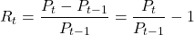
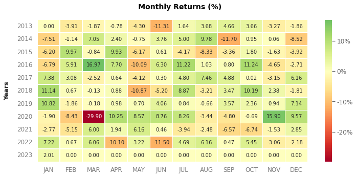
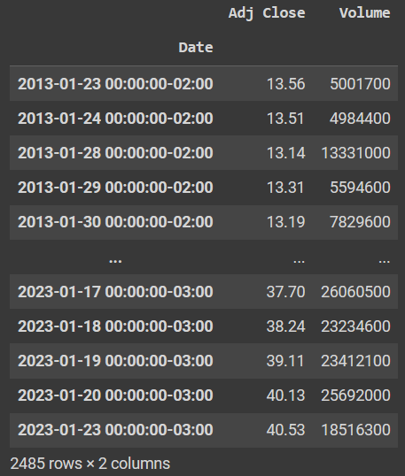
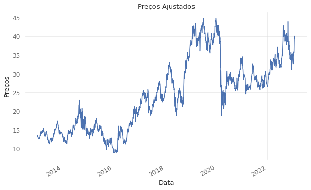
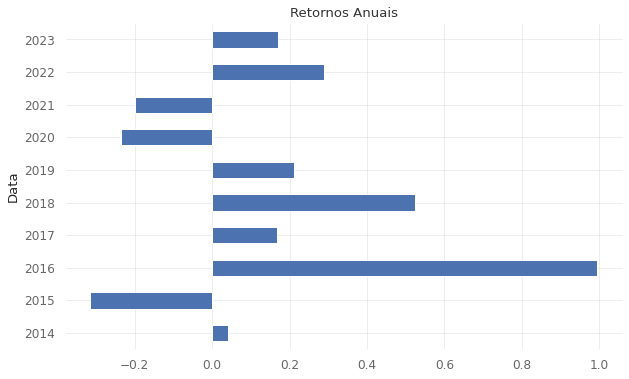
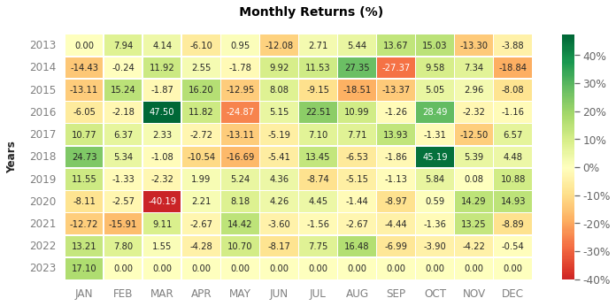
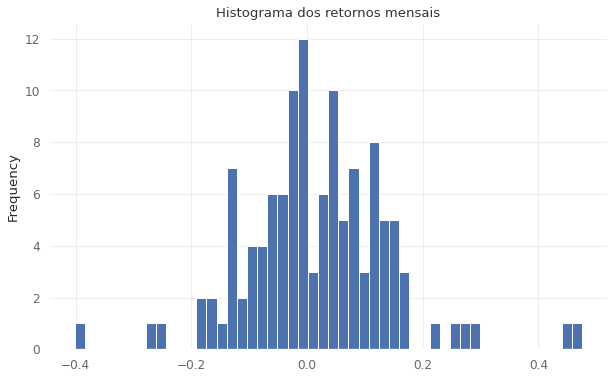
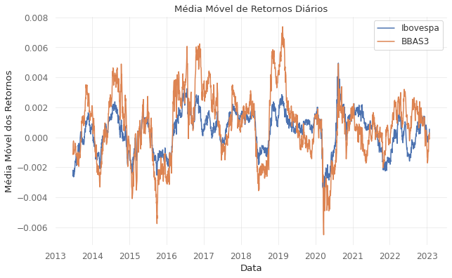

Introdução
A análise de retornos financeiros é um dos principais meios de avaliar os resultados de investimentos em ações. Neste artigo, vamos aprender como calcular e analisar os retornos financeiros de ações e do índice Bovespa (IBOV) usando Python.
No post de hoje, vamos realizar uma análise exploratória da série de retornos diários do Ibovespa utilizando o Python.
1. Metodologia
Um site popular que fornece preços diários de ações é o Yahoo! Finance. No entanto, se você usar os preços cotados neste site para calcular o retorno de uma ação, deverá ter o cuidado de usar as informações corretas. O Yahoo! Finance informa dois preços de fechamento de ações, o preço de fechamento real e o fechamento ajustado (Adj Close) que é ajustado para desdobramentos de ações e dividendos.
Em um desdobramento de ações (os Splits), o número de ações aumenta e o preço das ações diminui. Por exemplo, em um desdobramento de ações 2 por 1, o número de ações seria dobrado, pois os acionistas receberiam 2 ações para cada 1 ação que possuem atualmente, e o preço das ações seria reduzido pela metade.
Suponha que uma ação esteja sendo negociada atualmente a $ 120 por ação e passe por um desdobramento de 2 para 1. Suponha também que o preço das ações permaneça inalterado durante o dia. O preço de fechamento no Yahoo! O setor financeiro reportaria preços de $ 120 e $ 60, respectivamente, o que parece uma queda de 50% no preço das ações. Na verdade, o retorno do acionista durante o dia foi zero porque, embora o preço das ações tenha caído pela metade, o número de ações que possuíam dobrou. Nesse caso, o preço de fechamento ajustado seria de US$ 60 para os dois dias.
O fechamento ajustado relatado no Yahoo! O setor financeiro também ajusta os dividendos. Considere uma ação que está sendo vendida por $ 100 no final de abril, paga um dividendo de $ 5 e tem um preço de $ 108 no final de maio. O retorno do acionista para esse período foi (US$ 108 - US$ 100 + 5) / US$ 100 = 13%. Nesse caso, o fechamento ajustado no final de maio seria de US$ 108, enquanto o fechamento ajustado do final de abril seria de US$ 95,581, o que representa um retorno de (US$ 108 - 95,581) / US$ 95,581 = 13%.
É importante também frisar que os preços ajustados do Yahoo! não são exatos, pois o Yahoo! Finance relata o ajuste próximo ao centavo mais próximo. Esse arredondamento pode causar uma pequena diferença no cálculo do retorno. Considere o exemplo que usamos acima. Usando o preço ajustado de US$ 95,581, calcule você mesmo que o retorno é, na verdade, 12,99%, não 13%. Se você precisar de retornos totais, o fechamento ajustado fornecerá um cálculo de retorno bastante preciso e muito mais fácil, especialmente porque o Yahoo! finance não vai baixar preços e dividendos na mesma planilha. No entanto, se você precisar de retornos de ganhos de capital e rendimentos de dividendos separadamente, ou retornos muito precisos, precisará usar o preço de fechamento e os dividendos, não o fechamento ajustado.
2. Preparando o ambiente
Todo o código foi executado utilizando o Google Colab. (Gratuito e Online) Caso for executar localmente em sua máquina certifique-se de instalar todas as bibliotecas antes de importa-las.
Instalação das bibliotecas necessárias:
!pip install -q yfinance
!pip install -q quantstatsImportação das bibliotecas utilizadas:
import yfinance as yf
import pandas as pd
import numpy as np
import matplotlib.pyplot as plt
import quantstats as qs3. Retornos mensais do Índice Bovespa
Primeiro, importamos os dados e criamos um DataFrame usando o Pandas. Em seguida, criamos um novo DataFrame com os retornos financeiros calculados.
ticker_ibov = ['^BVSP']
periodo_ibov = '10y' # Opções: 1d,5d,1mo,3mo,6mo,1y,2y,5y,10y,ytd,maxInicialmente criamos a variável ticker_ibov, onde salvaremos o ticker do índice Bovespa. E a variável periodo_ibov, onde salvamos o período ou intervalo de tempo para coleta dos dados.
ibov = yf.download(ticker_ibov, period=periodo_ibov, rounding=True )['Adj Close']
retornos_ibov = ibov.resample('M').last().pct_change().dropna()
qs.extend_pandas()
retornos_ibov.plot_monthly_heatmap()Em seguida, salvamos na variável ibov o conjunto de dados de Preços Ajustados (Adj Close).
Com a função resample() do Pandas, que é um método de conveniência para conversão de frequência e reamostragem de séries temporais. Agruparemos os dados mês a mês. Usamos o pct_change() para obtermos o aumento percentual e o dropna() para limparmos as linhas as quais não possuem preço de fechamento. O dataframe tratado é salvo na variável retornos-ibov.
O cálculo: Para o retorno total utilizando o fechamento ajustado é bem simples, como segue,

Retorno Total = (Preço Final-Preço Inicial)/Preço Inicial
ou
Retorno Total = Preço Final/Preço Inicial-1
E é exatamente esse calculo que é feito com a função pct_change(). Por fim, plotamos o nosso gráfico.

Podemos identificar com o mapa acima que, o meses de março de 2016 e novembro de 2020 obtiveram os maiores retornos percentuais, já março de 2020 foi o mês com a maior baixa do índice, justificado pelo decreto da pandemia de Covid-19. O índice tem iniciado o mês de janeiro de 2023 no positivo, até o momento em que os dados foram coletados.
4. Análise dos retornos do Bando do Brasil
Obtenção dos Dados
Aqui, repetimos o mesmo processo executado anteriormente com os dados do Ibovespa.
tickers = ['BBAS3.SA',]
periodo = '10y' # Opções: 1d,5d,1mo,3mo,6mo,1y,2y,5y,10y,ytd,maxprices = yf.download(tickers, period=periodo, rounding=True )[['Adj Close', 'Volume']]
pricesPreços
Ao executarmos a variável prices, notaremos que ela contém o seguinte DataFrame, o que já nos permite ter uma primeira visualização dos nossos dados. Aqui além dos preços, também temos a coluna com o volume.

Plotagem da série temporal de prices:
prices['Adj Close'].plot(kind = 'line', title='Preços Ajustados', xlabel='Data', ylabel='Preços')
Podemos observar que os preço das ações do Banco do Brasil (BBAS3) tiveram um movimento de alta expressiva ao longo de 2019, seguida de uma queda também expressiva no início de 2020.
Retornos Anuais
retornos_anuais = prices['Adj Close'].resample('Y').last().pct_change().dropna()
retornos_anuais.index = retornos_anuais.index.year
retornos_anuais.plot(kind = 'barh', title='Retornos Anuais', xlabel='Data')
Os anos em que houveram retornos negativos foram 2015, 2020, 2021. Sendo 2015 o ano com maior retorno negativo e 2016 o ano com maior retorno positivo.
fig, (ax1, ax2) = plt.subplots(nrows=2, ncols=1, figsize=(14,18))
prices['Adj Close'].plot(kind="line", ax=ax1)
ax1.set_title("Preços Ajustados BBAS3")
ax1.set_ylabel("Preço")
ax1.set_xlabel("Ano")
retornos_anuais.plot(kind="line", ax=ax2)
ax2.set_title("Retornos Anuais BBAS3")
ax2.set_ylabel("Preço")
ax2.set_xlabel("Ano")
plt.show()
Estatísticas dos retornos anuais
# Importamos mais as seguintes bibliotecas.
import math
import statistics as stretornos_anuais.describe()O resultado da função describe() será a tabela abaixo:
| Métricas | Valores |
|---|---|
| Média | 0.164906 |
| Desvio Padrão | 0.390533 |
| Mínimo | -0.315050 |
| 25% | -0.138700 |
| 50% | 0.169748 |
| 75% | 0.269097 |
| Máximo | 0.994141 |
# Cenários otimista e pessimista para o ativo
média = st.mean(retornos_anuais)
desvio = st.pstdev(retornos_anuais)
otimista = média+2*desvio/math.sqrt(10)
pessimista = média-2*desvio/math.sqrt(10)
print("Otimista: ",otimista, "Pessimista: ",pessimista)Otimista: 0.39922543479982053 (39,92%) Pessimista: -0.06941435742563054 (6,94%)
Retornos Mensais
retornos_mensais = prices['Adj Close'].resample('M').last().pct_change().dropna()
qs.extend_pandas()
retornos_mensais.plot_monthly_heatmap()
retornos_mensais.plot.hist(bins=50, title='Histograma dos retornos mensais')
Podemos notar com o histograma que os retornos mais frequentes estão entre -10% e mais 10%.
Por fim, temos a plotagem das médias móveis do Ibovespa e BBAS3.

Conclusão
Neste tutorial, aprendemos como calcular e analisar os retornos financeiros de ações e do índice Bovespa usando Python. Usamos o pacote Yfinance para baixar os dados, Pandas para calcular os retornos e o pacote Matplotlib para plotar e analisar os resultados. E que o retorno médio mensal do índice Ibovespa de 0,76% foi menor do que o retorno médio mensal do banco do Brasil (BBAS3) de 1,71%.
Referências
CAETANO, M. A. L. Python e mercado financeiro. São Paulo: Editora Blucher, 2021. E-book. ISBN 9786555062410. Disponível em: https://integrada.minhabiblioteca.com.br/#/books/9786555062410/. Acesso em: 25 jan. 2023.
Como Calcular o Preço Ajustado (Dividendos, Splits) de uma Ação. Canal: Ferramentas do Investidor.
ROSS, S. A.; WESTERFIELD, R. W.; JAFFE, J.; et al. Administração financeira. Porto Alegre: Grupo A, 2015. 10. ed. E-book. ISBN 9788580554328. Disponível em: https://integrada.minhabiblioteca.com.br/books/9788580554328. Acesso em: 25 jan. 2023.